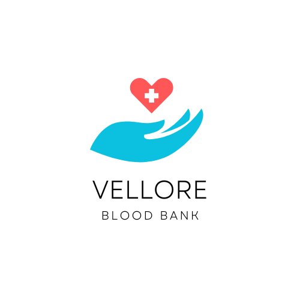

why to donate blood
safe blood saves blood.blood is needed by women with complications during pregnancy and childbirth.
children with severe anaemia,often resulting from malaria or malnutrition,accident victimsand surgical and
cancer patients.
there is a constant need for a regular supply of blood because it can be stored only for a limited
period of time before use.regular blood donation by a sufficient number of healthy people is neede to ensure
that blood will always be available whenever it is needed .blood is the m,ost precious gift that anyone
can give to another person-the gift of life.a decision to donate blood can save a life,or even several
if your blood is separated into its components-red cells,plateletsand plasma-which can be used individually
for patients with several conditions
VIT blood bank
copyright © 2025
